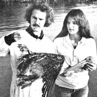
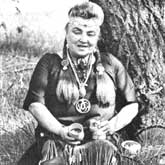
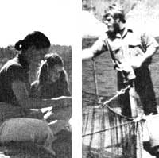

The Suncoast Seabird Sanctuary is a thriving Florida home for thousands of injured Egrets, Gulls, Terns, Cormorants, Screech Owls, and other feathered gulf coast wildlife. And Ralph Heathfounder of the non-profit refuge-estimates that over 5,000 birds have been rescued, nursed back to health, and returned to freedom by his Sanctuary staff during the past seven years.
Heath is a young man with an obsession: to save as many sick and damaged wild birds as he can . . . an ambition which developed quite suddenly, after a rather classic chance encounter. Ralph had just graduated from the University of South Florida in 1969 and had planned to return to school to study medicine. But the discovery of an injured Cormorant altered the direction of his life forever.
Ralph took the pelican-like bird to a local veterinarian who set its broken wing. Surprisingly enough, the Cormorant-nicknamed Maynard-survived and became a family pet for several weeks as Heath and his wife Linda nursed it back to health . . . and added additional injured seabirds to their backyard refuge.
"That was it!" declares Ralph. "That summer I decided I had found my calling. A year later we established the Suncoast Seabird Sanctuary and went to work saving waterfowl full time."
The first few years of the Heaths' new occupation were filled with a lot of hard work and struggle as Ralph developed new medication programs and unique "search and rescue" techniques. "The birds couldn't come to us . . . so we had to go to them," he said. "Once we got the emergency-hospital part of our operation under control, we even started making motorboat runs to find injured seabirds."
Thanks to such progressive ideas, the Suncoast Seabird Sanctuary soon be came well known by sportsmen, dock workers, and townspeople in the Tampa area. And such people now often phone in tips about lame birds they spot among the mangrove trees and sand bars along the gulf beaches.
"The biggest problem is the damage done to Pelicans by miles of tangled fishing line and thousands of lures and hooks lost by fishermen," Ralph reports. "Although Pelicans used to be prevalent along the gulf coast just 20 years ago, few people realize how rare they've b6come today. The Brown Pelican is the official state bird of Louisiana, but it's such an endangered species that there are now more in our Sanctuary than in the entire state of Louisiana! "
With numbers like that to deal with, it's obvious why one of Ralph's major current goals is to encourage the breeding of the permanently crippled seabirds in his sanctuary. Although healthy captive birds sometimes reproduce in zoos, injured waterfowl rarely hatch live chicks. Heath is justifiably proud, then, when he reports that his refuge is currently hatching, raising, and releasing about half a dozen healthy, Sanctuaryborn Brown Pelicans each spring.
If you'd like to know more, Ralph Heath has written an interesting booklet-Care and Feeding of Orphan Song and Garden Bards-that's available free of charge (along with a brochure about his life's work) by writing: Suncoast Seabird Sanctuary, Indian Shores, Florida 33535. And if you do order a copy, send along a dollar to cover the cost of your reply. It'll be money well-spent.Johann Rush.
Keewaydinoquay Pakawakuk Peschel has been practicing herbal medicine since the tender age of nine. Her career began-some 48 years back-in a traditional Indian ceremony performed by her own Michigan Ojibway tribe . . . for it was during that fateful native rite that Keewaydinoquay received both her given Ojibway name (meaning "woman of the northwest wind") and the coveted apprenticeship to her tribe's sagacious herb doctor.
"It was the duty of each person in the Ojibway tribe to master at least one skill in behalf of the group," Keewaydinoquay remembers. "I recall one member of our village, for example, who became the most skillful birchbark splitter in the entire district. That woman could 'pop' off a piece of bark big enough to make into a canoe," Keewaydinoquay declares, "without once harming the naked tree beneath it! "
For Keewaydinoquay Peschel, though, the task was somewhat more complicated: to master the tribe's long-kept secrets of Ojibway herbal medicine. But she buckled down to the awesome prospect . . . and-before long-had learned to recognize various plants, prepare vital medicines, and put her knowledge to use making house calls within the village.
Keewaydinoquay's training also required that she study an assortment of prayers which would justify the taking of the plants needed for her preparations. (What scientists today are just discovering about the benefits of talking to growing things, the Ojibway tribe .had been employing in its spoken plant rituals for centuries.) "For instance," Keewaydinoquay explains, "if I required a certain root for a treatment, I'd communicate this need to the plant before taking it . . . and make an offer to scatter its seeds in return. If I failed to fulfill my pledge, the spirit of the herb would not go with it, and the plant would then lose its efficacy. It was just this sort of religion of conservation, in fact, that was responsible for the excellent ecological condition this continent was in several centuries back before the Europeans arrived! So you see," she concludes, "Ojibway medicine is not just a substance to be put in a bottle. Much more than that, it's an attitude . . . which looks upon plants and animals as the brothers and sisters of humankind."
Keewaydinoquay studied the harmony between the plant and animal worlds closely for eight long years until-at the age of 17-she graduated from her apprenticeship and left the tribe to teach fn Michigan's public schools. And now-at age 57-she has put aside her teaching career to study anthropology at the University of Michigan . . . convinced that this is the best way to open the minds of others to the wisdom embodied in her people's ancient medical art. "Folks will begin to believe what I have to say about the potential of herbal healing," she asserts, "only when they see my name followed by the letters of a university degree."
At present, Keewaydinoquay lives in Ann Arbor, Michigan, in a house located on the site of an old Indian village where bones and relics were unearthed in a 1952 excavation. And, of late, she dreams of transforming her hilltop residence into a center for native Americans living and studying in Ann Arbor's environs, "These grounds could be designated a historical site," says Keewaydinoquay.
And-at this thought-she falls into reverie: "If I just close my eyes for a moment," she muses, "I can see my people-present and past-dancing in the open of the dell down the hill."-Helen Prescott,
"It's been tough," says Linda Mant . . . and so it has, for both Linda and her husband are true pioneers in the salmon fish industry. And even though some folks seem to think the Mants have enjoyed quite an overnight success in their chosen venture, the couple still feels that they're "not out of the woods yet".
Bob and Linda's story began at Goose Cove on Penobscot Bay in Maine, where Bob-a marine biologist working on a grant from the University of Maine-was trying to help the troubled Atlantic coast fishing industry. Overfishing and pollution have caused a scarcity of salmon and Bob had a plan to transplant a number of Pacific coho (silver) salmon to the East to replenish the coastline's dwindling population of the fish.
The survival rate of salmon is conspicuously low. Only a piddling 2%-5% live the full three years that it takes for the newly hatched fry to swim out to the ocean, grow into adulthood, and return to their spawning grounds to breed another generation. Bob, however, had concluded that he could increase that rate to 50% by raising the fish in pens . . . and the officials of a mining company agreed to assist him financially with his experiments, if he would set up a commercial salmon farm. Once Mant had invested a considerable amount of his time and effort in the venture, though, the firm's officers told him that they didn't believe his proposed operation would give them enough return on their investment . . . and backed out of the arrangement.
For Bob and Linda Mant, however, there was no turning back. And so they soon signed their names to a quartermillion-dollar loan for the purchase of 100 seaside acres, an unpolluted 300-foot. deep saltwater cove (with a tidal flow controlled by a gate at the inlet's mouth), three buildings, and some equipment which they felt would be useful in their work with the transplanted Pacific salmon. The Mants' Maine Sea Farm was a reality!
Western salmon were shipped east as eggs, hatched, penned 50 feet below the water's surface, and fed an extravagant diet of ground shrimp and crab meat for the 20 months they needed to reach market size (8-12 ounces). "We had to swallow more than a year and a half of expenses before we could anticipate any income," says Linda. And then, just as their first glorious payday was almost within reach, the Mants ran out of money. There they were, with seventy thousand cohos only days away from market . . . and Linda and Bob had nothing to feed them!
Luckily, at the very last minute, a Boston banker-who was willing to give the Mants the help they needed without realizing an immediate return on his investment-came rushing to the rescue. And that's how Bob and Linda's first crop of Pacific coho salmon were fed, harvested, and sold . . . to the delight of a great many Maine and Massachusetts salmon lovers.
Still, the Mants' initial crop wasn't all profit. As a matter of fact-thanks to the large number of salmon they lost as the fish were raised from the cold depths of the water in which they had lived to the cove's sun-warmed surface-there wasn't nearly as much profit in that first harvest as there should have been.
In some ways, though, that initial loss has proven quite beneficial to the Mants. Because it made them change their Sea Farm's schedule so that its crops of salmon would mature in the winter when colder surface temperatures would ensure a far higher percentage of live harvests. (The really good thing about this change, of course, is that Bob and Linda's salmon now reach the market exactly when fresh fish are the most scarce . . . which means that their harvests now fetch the highest possible prices! )
"Things, finally, have been falling our way," Linda now says ... and she means it: The Mants harvested 100,000 cohos last winter . . . the mining company has decided to renegotiate its sales agreement . . . the Sea Farm's loans have been extended . . . and a horde of marine biologists have applied to Bob and Linda for jobs.
Nope, it wasn't an easy road for the Mants, but-as the couple has shown-Good Guys still can win out over incredible odds. "We wanted to do everything the right way," Linda says. "We wanted to keep our operation small and efficient, give our fish the best possible diet, feed them by hand instead of mechanically, and market only the very freshest salmon that we could produce. I cried a lot during some of the rough times we had to go through. But the local folks were rooting for us . . . and that made all the difference. We're sure the worst is behind us now and-although we know we still have a lot of hard work aheadwe're confident that we're in the salmon business to stay."-Dave Epperson.
Know someone-whether sung or unsung-who's doing something of merit in wholistic gardening, alternative energy, environmental conservation, self-employment, low-cost house construction, or any of the other fields of endeavor featured in MOTHER? A fact-filled, 1.104 to 500-word essay that describes that person, accompanied 6y a sharp, glossy, black-and-white photo, will-upon being accepted for use in PROFILES-earn you a fast, flat $50. .Send it to: PROFILES Editor THE MOTHER EARTH .NEWS(restricted), P.O. Box 70, Hendersonville, N.C. 28719.
|
 |
 |
 |